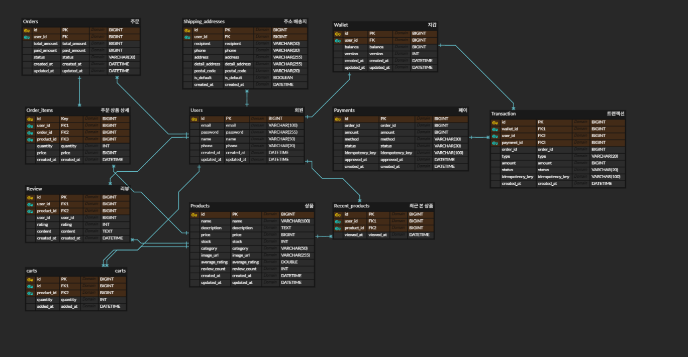

ERD 설계 시 고려한 핵심 질문
-
결제 도중 서버가 죽으면?
- 결제는 외부 시스템(결제 승인, 재고 등)과 연결됨
- 중간에 서버가 죽으면 상태가 “불명확”해짐 → 돈은 빠졌는데 성공인지 실패인지 모름
-
따라서 모든 과정을 명확히 나타낼 수 있는 상태를 정의하는 것이 중요하다고 판단
(예:
PENDING,PAYING,SUCCESS,FAILED)
-
요청이 2번 오면?
- 네트워크 재시도 / 사용자 더블클릭처럼 동일 결제가 여러 번 처리되는 경우
-
idempotency_key를 도입하여 멱등성을 보장하고, 같은 요청은 항상 같은 결과를 반환하도록 설계가 필요
-
결제 성공/실패가 엇갈리면?
- 예: 재고 확보는 성공 → 결제는 실패(또는 반대) 같은 불일치 케이스
-
재고 차감 + 결제 생성 등을 한 트랜잭션으로 묶어 원자성을 보장
- 트랜잭션이 너무 길어지면 Connection Pool 점유가 커질 수 있어 주의
-
나중에 이 돈의 흐름을 어떻게 증명하지?
- 정산·감사·재처리는 어떻게 하지?
- 이 질문에 답하려면 “상태 저장”만으로는 부족하다고 판단
예: 단순 연산만 남기면 언제/왜/무엇 때문에 변했는지 증명할 수 없음
User.point = 10000 결제 시 User.point -= 3000- 따라서 모든 변경 기록을 저장할 Transaction 테이블(일종의 회계 장부)이 필요하다고 판단